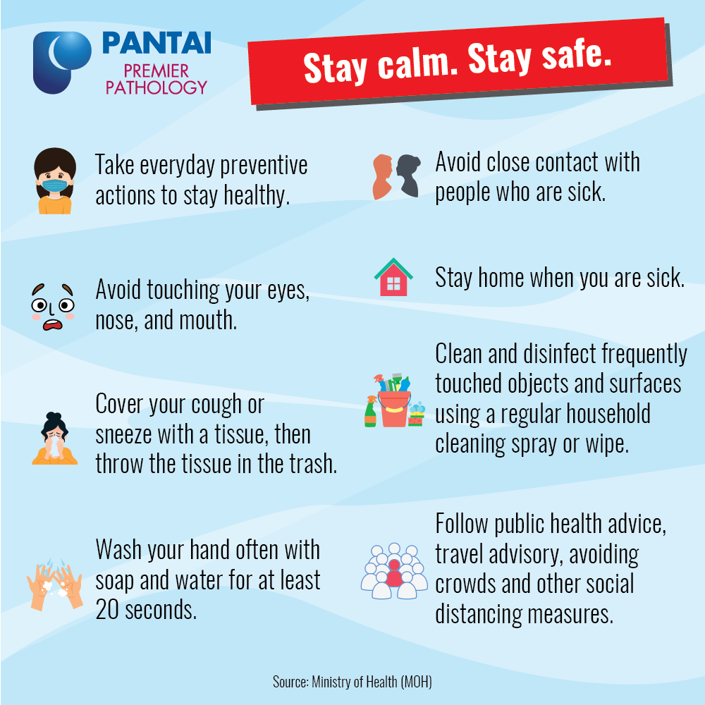

Before i sharing my MCO experiences, i would like to introduce myself. My name is Ain Batrisyia binti Azunaidey. I am from class of BA2322B, UiTM Machang, Kelantan. During my MCO times i have stayed with my family at Kuala Lumpur, which where the Corona disease get the highest cases in here and im quite scared of the surrounding here, although im just staying at home but im quite worried about the head of the family whose will go out to the supermarket to buy groceries for the family. All i can do is prayed that they will being protected from the disease.
My MCO experience hits differently this time because i never been unproductive as im now. But there are also new things that i have tried during this MCO times, so this is the win-win situation. To be honest, althought im quite sad because our country have been influenced by these disease, somehow im really grateful that i can gathered with my family during this hard times.From my point of view, all can i say im proud malaysian because, Dr Noor Hisham who is from Malaysia has been nominated as one of the 3 best doctor in the world whose fighting with the Covid-19.
Besides, i also wanted to share from the yesterday news that Malaysia new cases of COVID-19 has been decreases to only 85 cases. I can't be more happier with that news, im really blessed that all the folks of people in Malaysia gave a good cooperation to fight these dieases. i wanted to remind to all of the people, please do nothing but stay at home, is the easiest way for us to help our frontliners, nurses and doctors to fight and eliminate these bad these. #KITAPASTIMENANG
Click the button below:
Click the button below:
Click the button below:
Click the button below:

I hope Malaysians people continuing their responsibilities which are stay at home and stay safe so that, the cases in Malaysia will decrease day by day and the disease will be dissepear. Lastly, spend your this precious time with your family because maybe may/may not know you still got this such of free time in the future. Use this opportunity to create the strong bonding with your family.